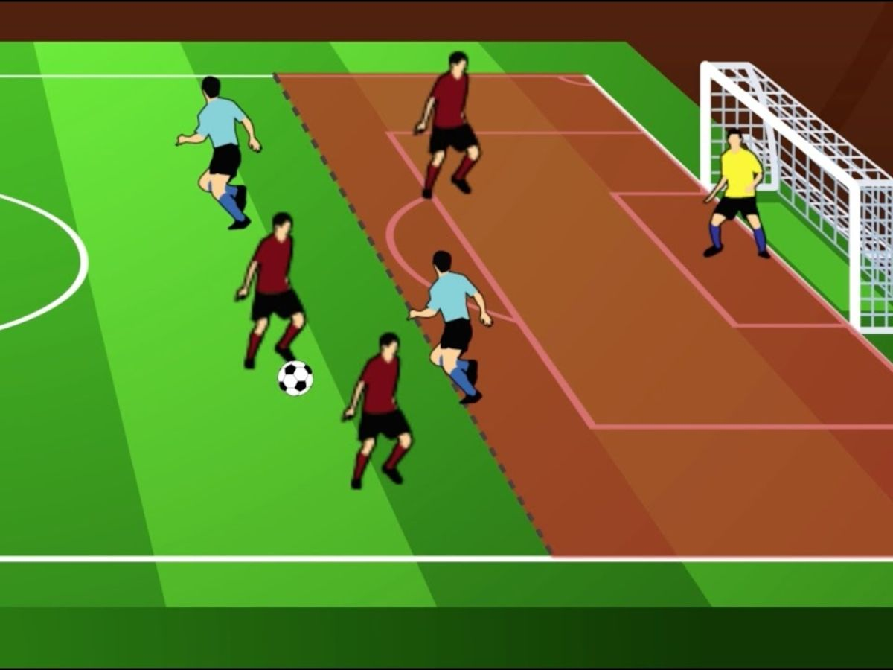
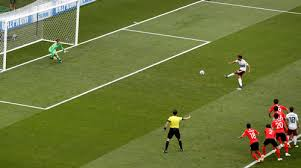
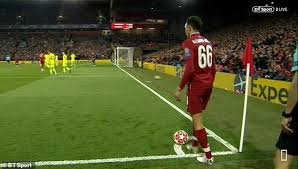

Mục lục
1.Luật sân bóng 2.Quy luật về quả bóng 3.Luật về số lượng người thi đấu 4.Luật về các trang bị của cầu thủ 5.Quy luật về trọng tài 6.Luật về việc bắt đầu hoặc tái khởi động một trận bóng 7.Luật quy định về bóng trong và ngoài cuộc 8.Luật về cách tính bàn thắng 9.Luật việt vị 10.Luật về các hành vi vi phạm luật trong bóng đá 11.Đá phạt trực tiếp và gián tiếp 12.Đá Penalty 13.Ném biên 14.Đá phạt góc1.Luật sân bóng
Sân bóng đá dài 105m, rộng 68m, có đường giữa sân và vòng tròn trung tâm 9m15. Mỗi biên ngang đặt khung thành (2.44m × 7.32m) kèm vùng cấm địa 16m50, nơi phạm lỗi sẽ bị phạt Penalty trên chấm 11m. Trước khung thành có khu vực 5m50, bốn góc sân có chấm phạt góc.

2.Quy luật về quả bóng
Quả bóng được sử dụng trong trận đấu phải là bóng được làm bằng da hoặc một chất liệu tương đương, áp dụng cho các cầu thủ từ 15 tuổi trở lên và có trọng lượng từ 410 đến 450 g. Chu vi quả bóng ước tính từ 68 đến 70cm và được nén dưới áp suất 0.6 đến 1.1

3.Luật về số lượng người thi đấu
Tất cả các trận đấu bóng đá tiêu chuẩn sẽ có 22 người thi đấu trên sân. Mỗi đội sẽ bao gồm 10 cầu thủ và 1 thủ môn. Nếu như một đội phải nhận từ 3 thẻ đỏ trở lên, sẽ bị xử thua và trận đấu ngừng diễn ra, mỗi đội chỉ được phép thay tối đa 3 cầu thủ.
4. Luật về các trang bị của cầu thủ
Trang phục đầu tiên mà các cầu thủ buộc phải có chính là giày. Loại giày được các cầu thủ sử dụng là giày đá bóng chuyên dụng. Cùng với giày là tất chân. Các cầu thủ cũng cần phải có tất chân để bảo vệ ống chân.

Tất cả các cầu thủ của mỗi đội sẽ mặc đồng phục giống nhau bao gồm quần ngắn, áo cộc hoặc dài tay. Riêng thủ môn sẽ được trang bị đồng phục riêng để có thể phân biệt với các cầu thủ khác trong đội.
Ngoài ra, thủ môn sẽ được trang bị thêm đôi găng tay để bắt bóng. Hai đội cùng thi đấu buộc phải có trang phục khác nhau về hình dáng và màu sắc. Nếu như cầu thủ nào không đạt yêu cầu về trang phục trên thì sẽ không được ra sân thi đấu.
5. Quy luật về trọng tài
Trong mỗi trận đấu sẽ có một vị trọng tài chính. Ông sẽ có nhiệm vụ di chuyển trên sân để có thể giám sát được tất cả các cầu thủ. Ông cũng chính là người có thẩm quyền lớn nhất trên sân bóng đá.
Trọng tài chính cần phải đảm bảo trận đấu được diễn ra thật công bằng và đúng với các quy định được đề ra.
Các trợ lý của trọng tài sẽ có nhiệm vụ hỗ trợ trọng tài chính để điều khiển trận đấu. Thường sẽ có hai trợ lý trọng tài đứng ở hai đường biên của phần sân mỗi đội. Họ được gọi là trọng tài biên với trang phục giống như trọng tài chính nhưng không được sử dụng còi.
Nhưng thay vào đó họ sẽ được trang bị một chiếc cờ hình tam giác. Khi các cầu thủ trong sân phạm luật, họ sẽ dùng lá cờ này phất lên để thông báo với trọng tài chính. Ngoài ra họ cũng có nhiệm vụ kiểm tra xem bóng có đi ra khỏi đường biên hay vào khung thành của cả hai đội hay không.
6.Luật về việc bắt đầu hoặc tái khởi động một trận bóng
Trước khi mỗi hiệp đấu bắt đầu, hai đội thi đấu sẽ lần lượt phát bóng để bắt đầu. Nếu hiệp 1 là đội A phát bóng thì hiệp 2 sẽ là đội B. Để quyết định đội nào phát bóng trước, trọng tài chính sẽ dùng đồng xu.
Quả phát bóng sẽ được cầu thủ thực hiện tại chấm phát bóng ở giữa sân. Đội nào xuất sắc ghi bàn thì đội còn lại sẽ được quyền phát bóng lại.
7.Luật quy định về bóng trong và ngoài cuộc
Bóng trong cuộc là bóng ở trạng thái bình thường. Quả bóng này sẽ được các cầu thủ điều khiển trên sân. Bóng ngoài cuộc là bóng nằm trong ba trường hợp sau đây
- Bóng đi vào khung thành của 1 trong 2 đội
- Bóng đi ra ngoài đường biên dọc và biên ngang
- Trọng tài chính thổi còi tạm dừng trận đấu vì một lý do bất kì
8.Luật về cách tính bàn thắng
Điều mà tất cả các cầu thủ mong muốn là ghi bàn vào lưới đối thủ và ngăn chặn đối thủ ghi bàn. Một bàn thắng được công nhận sẽ là quả bóng đi hoàn toàn vào lưới của khung thành của đối phương
9.Luật việt vị
Cầu thủ bị việt vị khi
- Cầu thủ đứng ở phần sân đối thủ
- Cầu thủ đứng sau 10 người của đối thủ và ở sau bóng
- Cầu thủ tham gia vào tình huống bóng đó(sút, cản trở đối thủ,...)
Tiêu chí trên được tính từ lúc đồng đội tác động lên bóng
10.Luật về các hành vi vi phạm luật trong bóng đá
Các lỗi sau đây sẽ cho đối thủ hưởng một quả đá phạt:
Va chạm vào người đối phương không đúng luật
Xô đẩy đối phương
Cố tình đá vào người đối phương
Chèn người vào các cầu thủ của đội đối phương
Cố tình đánh hoặc tìm cách đánh vào người đối thủ
Ngáng chân đối thủ
Xoạc chân không đúng luật
Cố tình dùng tay chơi bóng
Tạo ra các tình huống gây nguy hiểm cho các cầu thủ đội bạn
Giành lại bóng khi thủ môn của đối phương đã kiểm soát bóng bằng
tay
Ngăn cản đối phương trái phép
Cản trở các tình huống phát bóng của thủ môn đối phương
Các lỗi sau đây sẽ nhận thẻ vàng
Hành vi phi thể thao nhẹ
Không tôn trọng quyết định của trọng tài
Liên tục mắc lỗi khi thi đấu
Làm gián đoạn, câu giờ đưa bóng về sân
Không tuân thủ khoảng cách khi ném biên hay đá phạt
Tự ý vào sân thi đấu
Tự ý rời sân thi đấu
Cố tình chơi bóng bằng tay
Các lỗi sau đây nhận thẻ đỏ
Cố tình chơi xấu một cách nghiêm trọng
Có hành vi bạo lực đối với các cầu thủ khác trên sân
Nhổ nước bọt vào đối thủ
Cố tình ngăn cản đối phương không đúng luật
Cố tình dùng tay chơi bóng trong khu vực cấm
Sử dụng các lời nói, hành vi làm ảnh hưởng đến đối phương.
11.Đá phạt trực tiếp và gián tiếp
Thông thường sẽ có hai loại đá phạt là đá phạt trực tiếp và đá phạt gian tiếp. Đá phạt trực tiếp là bạn có thể đưa bóng vào cầu môn của đối thủ chỉ sau 1 cú chạm. Còn gián tiếp là có ít nhất 2 cầu thủ(trừ người đá) chạm vào trái bóng.
12.Đá Penalty
Penalty là tính huống đá phạt trực tiếp trong vòng cấm.Quả bóng sẽ được đặt ở chấm penalty. Cầu thủ nào thực hiện quả bóng này sẽ được chỉ định rõ ràng. Khi này chỉ có một mình cầu thủ đó đối đầu với thủ môn mà không có bất kì sự ngăn cản nào từ các cầu thủ khác. Thủ môn lúc này sẽ phải đứng ở bên trên vạch cầu môn sao cho bóng được sút đi mới có quyền di chuyển. Nếu thủ môn cố tình di chuyển trước khi bóng được sút đi, cầu thủ thực hiện có quyền được sút lại quả Penalty vừa rồi.
13.Ném biên

Ném biên là tình huống bóng được đưa lại vào sân khi ra ngoài hai biên dọc. Nếu đội nào chạm bóng trước khi bóng chạy ra khỏi đường biên thì đội còn lại sẽ được quyền ném biên theo đúng tư thế được quy định. Nếu như quả ném biên rơi trực tiếp vào khung thành của đối thủ sẽ không được tính là bàn thắng.
14.Đá phạt góc
Nếu như trái bóng chạm vào cầu thủ đang phòng ngự rồi đi ra ngoài biên ngang thì lúc này đội tấn công sẽ được hưởng đá phạt. Bạn có thể ghi bàn từ một tình huống phạt góc.
